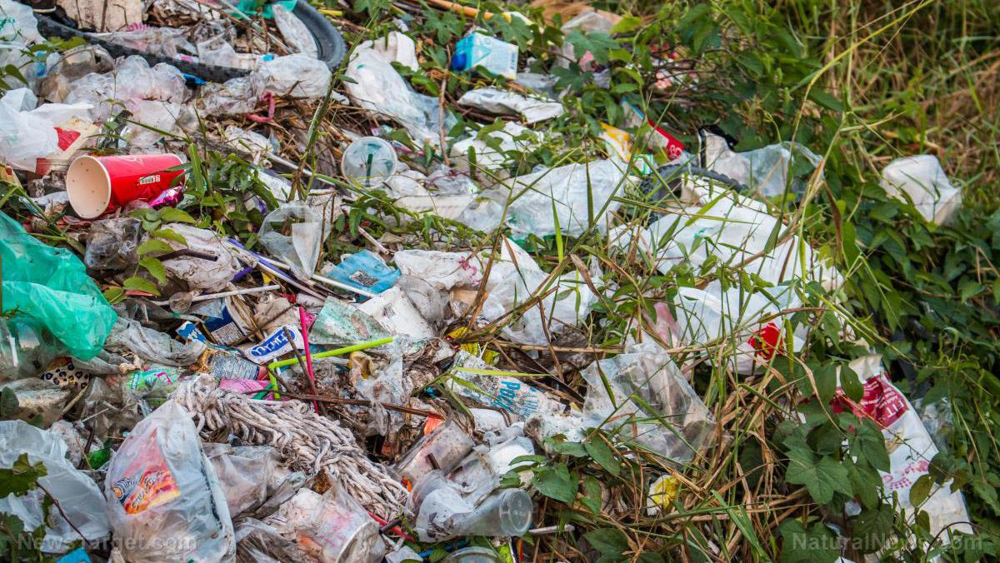
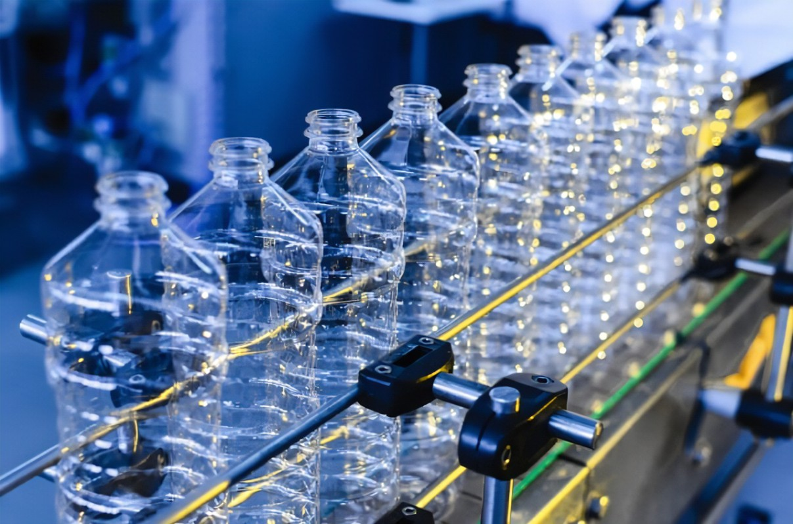

The Problem with Plastic
Plastic is a non-biodegradable material, which means most types of plastic are almost impossible for decomposers and microorganisms to biodegrade. Although researchers have found insects that could biodegrade plastic, it apparently could only biodegrade one type of plastic, and it wasn’t enough to eat up all our plastic waste.
Can't we stop the production of plastic?
In simple words, we can't. Plastic has been part of our lives—everywhere we go and everything we use—that it’s hard for some people to quit the usage of plastic. The businesses producing plastic wouldn’t want to stop, because they’re making so much profit, as people continue to use plastic. So, if we keep using plastic in our daily lives, plastic will continue to be produced by companies. And the cycle goes on.
Improper Plastic Disposal
Only 10% of the plastic we produce is disposed of or recycled properly. The rest ends up in landfills or underwater. It is important that we, humans, conduct the three Rs to decrease the impact of plastic pollution. It's okay to start small—there's no need to set such big goals to achieve. Instead of "I will recycle a hundred plastic items", start with "I will recycle one plastic item a day".
.png)
Types of Plastic
All plastics have different uses and properties. Some can be reused whereas some cannot due to the chemicals they consist of. In 1988, the Society of the Plastics Industry introduced the RIC system to classify plastics into seven types:
- PET – Polyethylene terephthalate or PET, is mainly used for food and drinks packaging as it has the ability to stop oxygen from spoiling the product inside. This plastic type can be found anywhere, especially in homes. Apparently, this is the world's most recycled plastic type (and a huge threat to the world).
- HDPE – High-Density Polyethylene or HDPE, is a versatile and chemical resistant plastic. It is stronger and has much more chemical resistance than PET, which makes it useful in making milk jugs, shampoo bottles, agricultural pipes and cutting boards. HDPE can be easily recycled, for example from a milk jug to a watering can. However, there are still concerns for the disposal of HDPE plastics.
- PVC – Polyvinyl Chloride, also known as PVC, is a synthetic plastic polymer. PVC comes in two types: rigid and flexible. Its rigid form is used in construction sites and building areas, to make window frames and pipes. When mixed with other materials, PVC becomes its softer and more flexible form which can be used for wiring, flooring and plumbing. Though it's known for many advantages, it should still be avoided if possible as it's hardly recyclable.
- LDPE – LDPE, Low-Density Polyethylene, opposite to HDPE, is a soft, flexible and lightweight plastic with resistance to moisture and chemicals. It is quite cheap and has a simple structure, making it easy to produce. LDPE is used in plastic bags, squeezable containers, and plastic wraps. This plastic type isn't widely recycled and continues to be a pollutant.
- PP – Polypropylene. Thermoplastic polymer that is tough, flexible, light-weight and heat resistant.
- PS – Polystyrene. Synthetic polymer used in storing cold beverages, etc. Although it's a very useful plastic material, it has a huge environmental impact and when divided into smaller pieces, it could send people in a chokehold and cause animals to suffer.
- OTHERS – Plastic that cannot be identified in the six types mentioned above. (Poly-carbonates, etc)